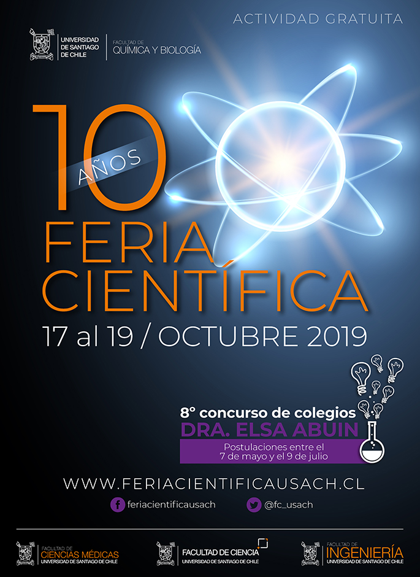
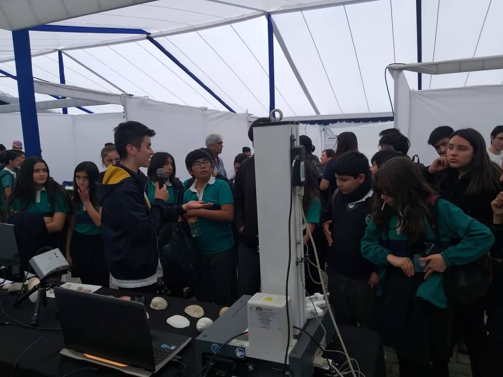
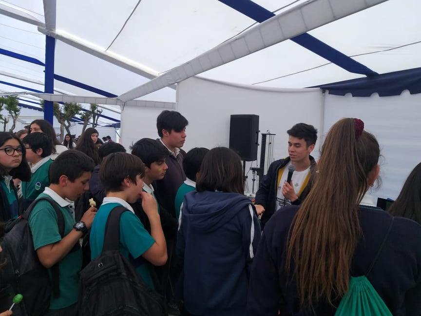
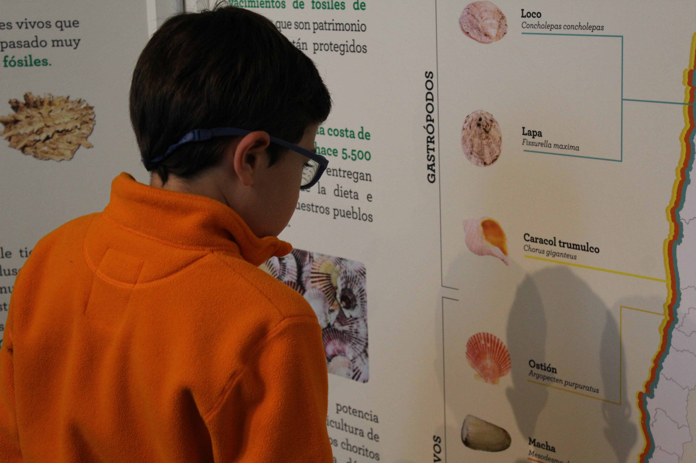
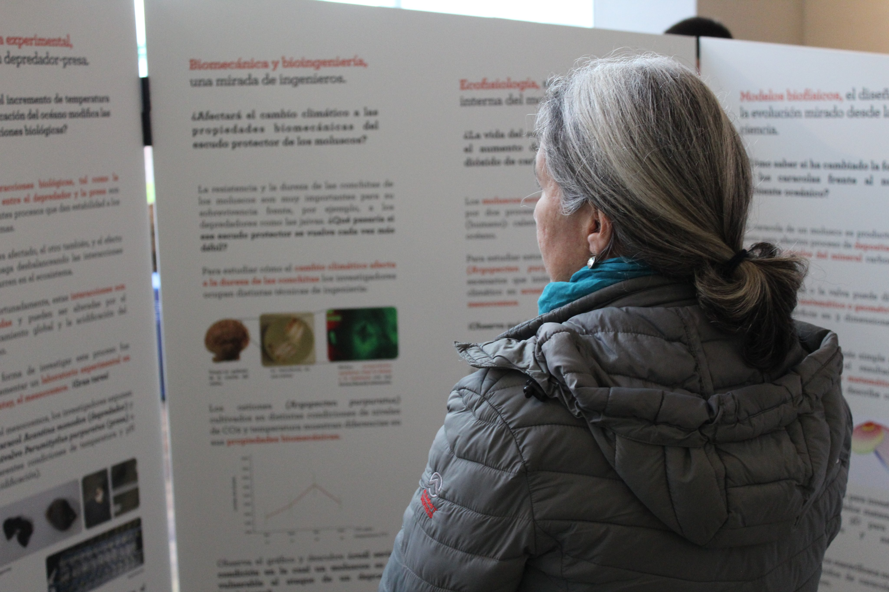
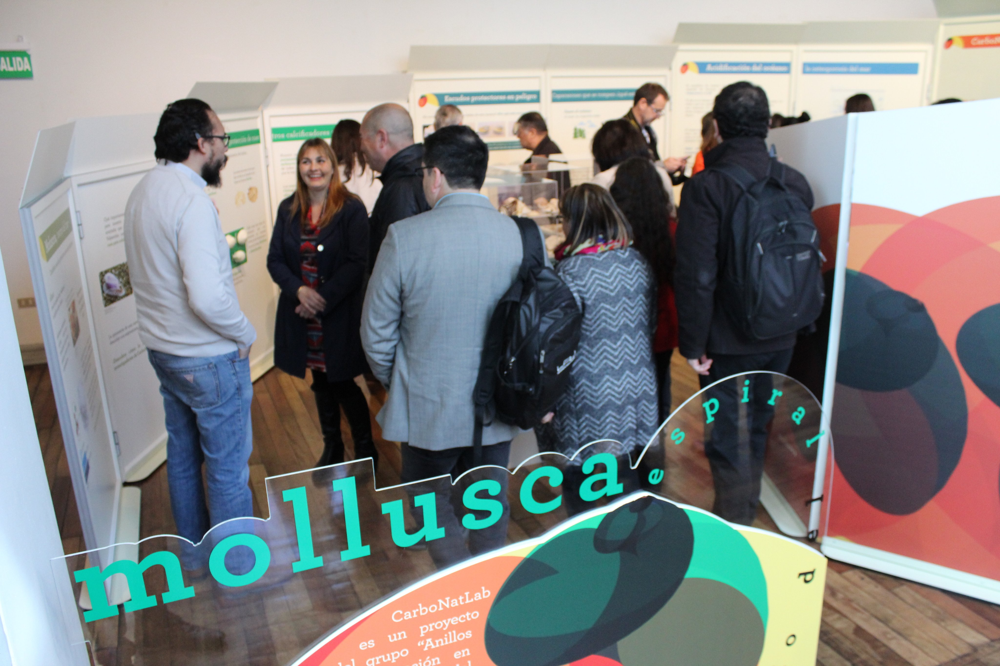
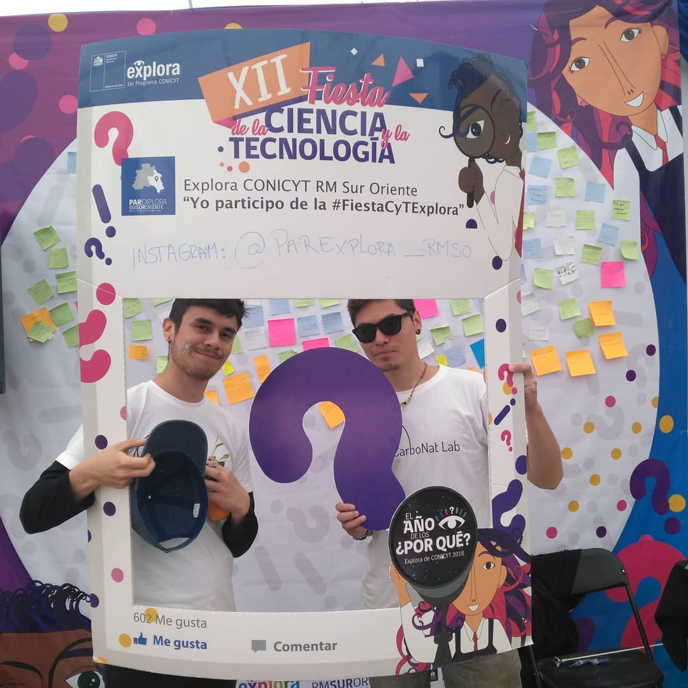
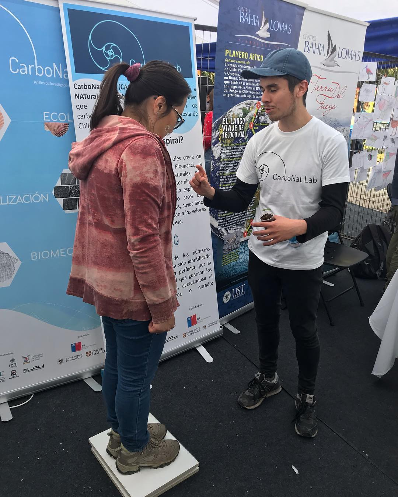
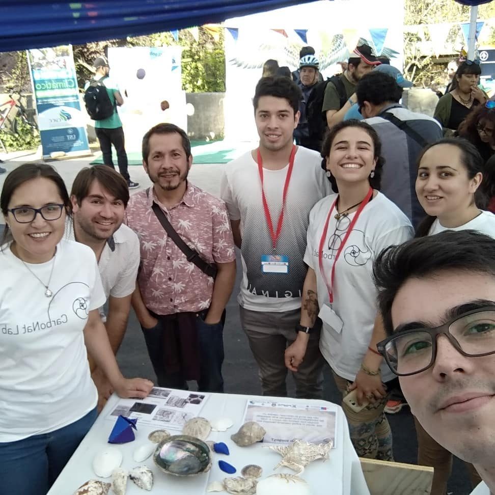

projects
🌀Current project:
- Disc4All Marie Skłodowska-Curie Actions 2020-ITN-ETN GA:955735 Training network to advance integrated computational simulations in translational medicine, applied to intervertebral disc degeneration. The Disc4All training network utilizes intervertebral disc degeneration (LDD) leading to low back pain (LBP) as a relevant application for integrating data and computational simulations in translational medicine to enable rational interpretations of the complexity of the interactions that eventually lead to symptoms. LBP is the most significant cause of morbidity worldwide, yet controversy remains about the specific cause leading to poor treatment options and prognosis. LDD accounts for 50% of LBP in young adults, but the interplay of factors from genetics, environmental, cellular responses, and social and psychological factors is poorly understood. Unfortunately, the integration of such data into a holistic and rational map of degenerative processes and risk factors has not been achieved, requiring the creation of professional cross competencies. Disc4All aims to tackle this issue through the collaborative expertise of clinicians; computational physicists and biologists; geneticists; computer scientists; cell and molecular biologists, microbiologists; bioinformaticians; and industrial partners. It provides interdisciplinary training in data curation and integration; experimental and theoretical/computational modeling; computer algorithm development; tool generation; and model and simulation platforms to transparently integrate primary data for enhanced clinical interpretations through models and simulations.
🌀Projects in which I have participated:
- CarboNatLab PIA-ANID ANILLO ACT 172037 Interacting structure and function of ecological, mechanical, and mineralogical properties of marine calcifiers: Shell carbonates as sources of bio-inspiration (Carbo-Nat-Lab). Mollusk shells are a biomaterial composed of a mineral phase (95-99%), predominantly calcium carbonate (CaCO3), and an organic biopolymer matrix (1-5%). In this biomineralization process, mollusks use specialized biomolecules to precipitate aragonite or calcite and crystalline control growth. Biomechanical analysis of this biomaterial suggests that although carbonates are constrained by the same physical laws as their artificial counterparts, they exhibit radical differences in their material properties. Implying that evolutionary design and environmental pressures have shaped the form and structure that characterize their biological functions. As environmental factors such as seawater chemistry (e.g., acidification) and temperature can modify the mineralogical composition, in this project, we evaluate the natural variation in carbonate production along the Chilean coast to determine how molluscan shells' mechanical and structural properties sustain their biological functions in the context of climatic stressors. This study will provide a solid scientific basis to strengthen the sustainability of aquaculture in Chile.
- Project FONDECYT 1170608f Biomechanical Behaviour of Arteries from Chronic Hypoxic Animals: Experiments, Modelling, Numerical Simulation, and Validation. The general goal of this project is to determine the modeling, numerical simulation, and experimental validation of the biomechanical responses of arterial vessels in a recently established rat paradigm representative of living under hypoxia. These will be related to the structural characteristics of the vessels. Three different rat vessels will be analyzed: aorta, carotid, and femoral, at different ages (neonates, juveniles, and adults) and oxygenation conditions (healthy normoxic and impaired hypoxic)

conferences
🌎 international
- 6th Barcelona VPH Summer School (VPH SC 2022) | poster presentation | May 2022
- co-organized by BCN MedTech at the Department of Information and Communication Technologies, Universitat Pompeu Fabra (UPF) and by the Virtual Physiological Human Institute (VPHi), Spain certificate | poster | | Best HandsOn Award
- 🎴 Towards a repository of patient-specific intervertebral disc finite element models.
- IX International Conference on Computational Bioengineering (ICCB 2022) | podium presentation | April 2022
- Instituto Superior Técnico, Universidade de Lisboa, Lisboa, Portugal certificate
- 🎤 Towards a repository of patient-specific intervertebral disc finite element models.
- X Reunión del Capítulo Español de la Sociedad Europea de Biomecánica (ESB-ESP 2022) | podium presentation | october 2021
- International Union of Societies for Biomaterials Science and Engineering, Virtual certificate
- 🎤 Comportamiento biomecánico de las conchas de los mejillones: degradación durante la remodelación de las propiedades mecánicas y sistema de defensa.
- 11° World Biomaterials Congress (WBC 2020) | poster presentation | december 2020
- International Union of Societies for Biomaterials Science and Engineering, Virtual certificate | poster
- 🎤 Mechanical behavior symmetry of mussel shells and numerical method for biomaterial orthotropy directions.
- 19° Congreso Internacional de Metalurgia y Materiales (CONAMET-SAM 2019) | podium presentation | november 2020
- Universidad Austral de Chile, Valdivia, Chile certificate
- 🎤 Análisis de la respuesta biomecánica del Perumytilus purpuratus ante escenarios de cambio climático.
- 25° Congress of the European Society of Biomechanics (ESB 2019) | 2 podium presentation | july 2019
- TU Wien, Vienna, Austria certificate
- 🎤 Biomechanical behaviour on shell characteristics (Perumytilus purpuratus) along the chilean coast.
- 🎤 Numerical analysis of the biomechanical response of oyster shells subjected to climate change scenarios.
🇨🇱 chilean
- XL Congreso de Ciencias del Mar | podium presentation | november 2020
- La Sociedad Chilena de Ciencias del Mar (SCHCM), Virtual certificate
- 🎤 Comportamiento mecánico simétrico de la resistencia de las conchas del mejillón Perumytilus purpuratus.
- 2° Congreso de Estudiantes de Postgrado USACH (USACH 2020) | podium presentation | november 2020
- Universidad de Santiago de Chile, Virtual certificate
- 🎤 Perumytilus purpuratus: simetría de valvas y caracterización de dirección ortótropa.
- Congreso Chileno de Biomecánica y Biomateriales (CBIO 2020) | podium presentation | october 2020
- Universidad de Santiago de Chile, Virtual certificate
- 🎤 Perumytilus purpuratus: simetría de valvas y caracterización de dirección ortótropa.
🎥 recording
- 1° Congreso de Estudiantes de Postgrado USACH (USACH 2019) | podium presentation | august 2019
- Universidad de Santiago de Chile, Santiago, Chile certificate
- 🎤 Modelos constitutivos de crecimiento aplicados a la concha del Perumytilus purpuratus.
science populatization
Science for children
videos made by me and Katherine Contreras

-
- 🎞 density 🎞 surface stress 🎞 non-newtonian fluids
video on a blank page video on a blank page video on a blank page
-
Science Festival | Festival de la Ciencia (FECI2020 of PAR Explora Región Metropolitana Sur
Poniente, ANID) | november 2020
- Universidad de Chile, Virtual | english certificate | spanish certificate
- STEM DIMEC-USACH | | news link 1 | news link 2


-
Science Festival | 10° Feria Científica USACH | october 2019
- Universidad de Santiago de Chile, Santiago, Chile | spanish certificate
- biomechanics and biomaterials laboratory | news link 1 | news link 2



-
Exhibition | Molluscas, espiral del cambio of the CarboNatLab project | CiiCC
| october 2019
- Museo de Historia Natural de Valparaíso (MHNV), Valparíso, Chile | english certificate
- carbonatlab | news link 1 | news link 2



-
Exhibition | XII Fiesta de la ciencia y la tecnología (PAR Explora Región Metropolitana Sur
Oriente, ANID) | CiiCC
| october 2018
- PARQUEMET, Santiago, Chile | english
certificate
- carbonatlab | news link


